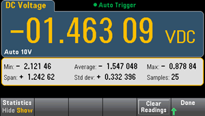

As the instrument takes measurements, it automatically calculates statistics on those measurements.
The statistics menu is accessed from the third softkey in the [Math] menu.
|
|
For accurate displayed statistics of AC measurements in Front Panel mode, the default manual trigger delay ([Acquire] > Delay Man) must be used. |
The first softkey on this menu (shown below) hides or shows the statistics below the data display (number, bar meter, trend chart (not available on the 34460A), or histogram).

The average and standard deviation are not shown if dB or dBm scaling is in use.